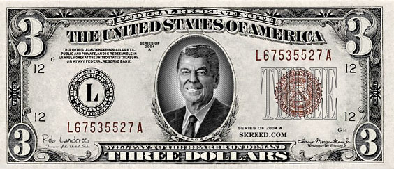

Put Reagan on the $3 Bill
A fitting memorial for a president who could really lie
- - - - - - - - - -
by Dave Lindorff
 HE GUSHY PRAISE of the late Ronald Reagan as a "great communicator" -- which is polluting the airwaves from Fox TV to NPR -- is enough to make anyone not suffering from political Alzheimer's retch. Still, all the public fanfare makes it clear we have to do something to acknowledge the guy.
HE GUSHY PRAISE of the late Ronald Reagan as a "great communicator" -- which is polluting the airwaves from Fox TV to NPR -- is enough to make anyone not suffering from political Alzheimer's retch. Still, all the public fanfare makes it clear we have to do something to acknowledge the guy.
My suggestion: put his face on a special limited-edition three dollar bill. Consider his vicious anecdote about an alleged "welfare queen" driving a Cadillac, a blatant fabrication.
In fact, much of the Reagan patter that so endeared him to the racist and reactionary public that was his target audience was fraud and mirrors. What he really ought to get credit for is being a very congenial and convincing liar, which was just what his pro-corporate handlers wanted and needed. The winning smile and the charming bob of the head were great devices for deceiving his viewers and listeners.
But the two terms of the Reagan administration, far from being an era of good communication between the government and the governed, were an era of government based upon secrecy, fraud and deceit.
It was the Reagan administration that pardoned FBI agents who had been convicted of Cointelpro abuses committed under President Nixon.
It was also the Reagan administration that effectively gutted the Freedom of Information Act, one of the more profound open government reforms to result from the Nixon scandals. That undermining of FOIA-an essential first step that allowed Reagan's government of lies to operate -- was never fully repaired during the Clinton years, and has been carried further under the current Bush administration.
The Reagan administration also began shutting down crucial information about government -- for example eliminating much important information gathering about medical costs and outcomes that used to be collected and disseminated by the Department of Health (then the Department of Health and Welfare). The idea behind these measures was to make it harder to monitor the impact of Reagan-era budget cutting of human services.
Reagan lied too about U.S. foreign policy, which began to rely, perhaps more heavily than ever, and certainly more heavily than in the Carter years, on secret wars and secret destabilization actions -- the Contra war against the government of Nicaragua being the most blatant of these, but hardly the only example. Military backing of the death squads in El Salvador and Guatemala were two other particularly ugly cases.
The entire government budget policy was a humongous lie, as budget director David Stockman belatedly admitted -- a lie which was secretly designed to simply bankrupt the country to force an end to the welfare state.
It's hard to imagine a bigger fraud being perpetrated upon the public than this deliberate wrecking of a nation's finances to achieve a public policy result that was not supported by the majority of the public.
And now the man who oversaw this program of government-by-deceit -- a man whose presidency, it should be added, spawned the current equally mendacious presidency -- is being praised not only as a great president (sic) but as a great "communicator."
I suppose in a perverse way, one would have to agree though. Reagan did do a good job of putting things over on the public. He and his handlers and physicians even managed to hide the rot that was destroying his brain during the last years of his presidency, during which he was reportedly little more than a speaking puppet for the men behind the curtain who were making policy.
The only problem with commemorating President Reagan with issuance of a $3 bill is that the money would actually be worth something.
Maybe a more appropriate place to place that wrinkled visage would be on a $50 U.S. Savings Bond. Those bonds have always been a classic consumer fraud, paying interest rates that are pegged at below the rate of inflation and leaving the "investors" poorer at maturity than they started out. The irony is even better because the bonds deteriorate in value faster the bigger the deficit, as the underlying currency declines in value and as the interest rate on other investments is driven higher.
Reprinted from CounterPunch

- - - - - - - - - - |